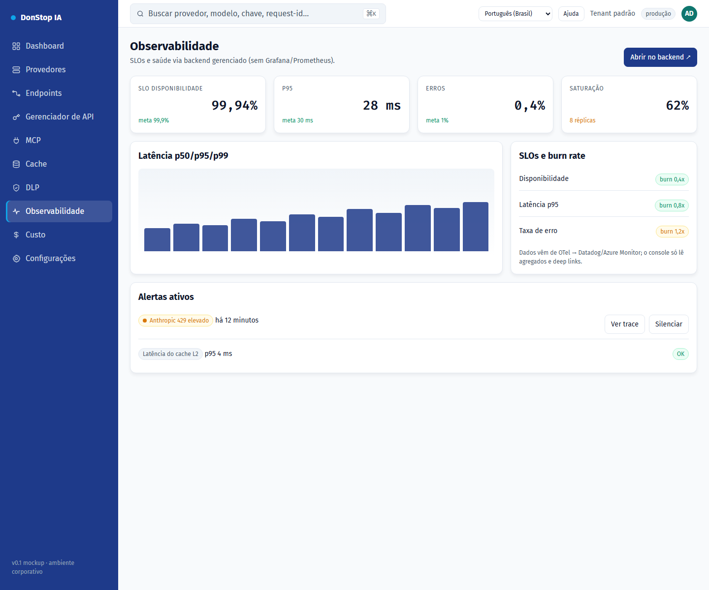

Observabilidade

O que faz
Mostra SLOs, disponibilidade, alertas, tráfego e latência, com deep links para o backend gerenciado.
Quando usar
Use esta tela quando precisar inspecionar, configurar ou operar esta parte do gateway.
Passo a passo
- Abra Observabilidade pela barra lateral.
- Revise os indicadores e a tabela principal.
- Use as ações descritas abaixo; as mudanças valem imediatamente.
- Use os deep links para abrir traces e detalhes de SLO no backend gerenciado.
Campos e ações
| Campo ou ação | Rótulo ou ação visível nesta tela. |
|---|---|
| Disponibilidade | Rótulo ou ação visível nesta tela. |
| SLOs e burn rate | Rótulo ou ação visível nesta tela. |
| Alertas ativos | Rótulo ou ação visível nesta tela. |
| Tráfego e latência | Rótulo ou ação visível nesta tela. |
| Abrir no backend ↗ | Rótulo ou ação visível nesta tela. |
Erros e estados comuns
- Se os dados não carregarem, tente novamente. Se persistir, verifique o gateway e os provedores.
- Se uma ação estiver desabilitada, confirme seu papel e o escopo do tenant.
- Estados vazios são esperados antes da primeira requisição; siga a chamada para ação.
Guias relacionados
Captura de tela de Observabilidade em Português (Brasil).